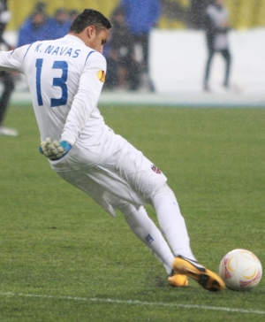

Market da Bola
Europa
Jorginho de ida para o Arsenal
Jorginho sai Chelsea para Arsenal

Keylor Navas de ida para o Nottigham Forest
Navas sai PSG para Nottigham Forest
Brasil

Erison de ida para o São Paulo
Erison sai Botafogopara São Paulo
Jair de ida para o Vasco
Jair sai Atlético MG para Vasco da Gama